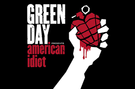

Rock age


Green Day es una banda estadounidense de pop punk123 y punk rock24 integrada inicialmente por tres miembros: Billie Joe Armstrong (guitarra y voz), Mike Dirnt (bajo y coros) y Tré Cool (batería y coros). El grupo originario de Berkeley,78 California, se gestó prematuramente en 1986 bajo el nombre de Sweet Children, con el baterista John Kiffmeyer (mejor conocido como Al Sobrante). En 1989 se cambiaron al nombre actual ya que el anterior (Sweet Children) se confundía con el de una banda local de esa época y poco después del lanzamiento de su primer álbum de estudio (39/Smooth), Tré Cool reemplazó a Al Sobrante.1 Fue uno de los grupos que nacieron en el club 924 Gilman Street, sitio que frecuentaban bandas de punk rock locales. Sus primeras publicaciones se realizaron por medio del sello discográfico independiente Lookout!,9 gracias a las exitosas ventas de sus primeros trabajos discográficos, se obtuvo una importante cantidad de admiradores. Algunos años después, en 1994 el conjunto firmó con Reprise Records, con este sello lanzaron el aclamado Dookie.10Con este nuevo álbum el conjunto llevó el sonido de finales de la década de 1970 a la nueva generación, además, el álbum se convirtió en un éxito internacional y lleva vendidas más de treinta millones de copias en todo el mundo.1112 Green Day junto a otras bandas como The Offspring y Rancid, fueron los que produjeron el renacimiento y popularización de los intereses principales en el punk rock en los Estados Unidos, como de la cultura misma,1314 las masivas ventas produjeron la apertura de una ola de grupos pop punk y punk rock. Diez años después muchos de esos conjuntos se encuentran inactivos o disueltos, mientras que Green Day sigue en plena vanguardia musical con las ópera rock American Idiot y 21st Century Breakdown de 2004 y 2009 respectivamente, ambas con un Premio Grammy al mejor álbum de rock. Editaron una trilogía de álbumes titulados ¡Uno!, ¡Dos! y ¡Tré!, editados en septiembre, noviembre y diciembre de 2012 respectivamente.1 Su último álbum Revolution Radio salió a la venta el 7 de octubre de 2016.15 El conjunto estadounidense ha vendido alrededor de 85 millones de copias en todo el mundo.1617 y más de 30 millones solo en su país.18 19 En 2010 se estrenó una adaptación teatral del álbum American Idiot en Broadway, el musical fue nominado para Tony Awards, incluyendo Mejor Musical y Mejor Diseño Escénico, y ha recibido comentarios positivos en general. A mediados de 2011 la revista Kerrang! los nombró como el segundo grupo más influyente surgido en los últimos treinta años, sólo por detrás de Metallica.20 Según una encuesta pública, en la publicación quincenal de Rolling Stone, se eligió a Green Day como el mejor conjunto de punk de la historia.